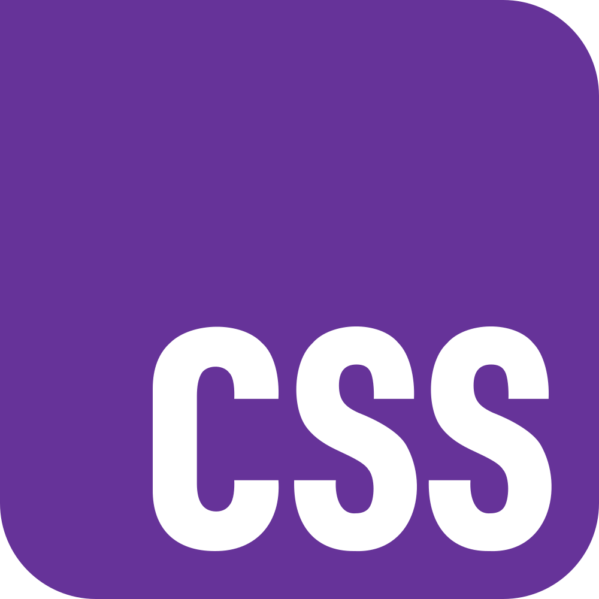

Apresentação
Hallo! Me chamo Nathan, estudante de Análise e Desenvolvimento de Sistemas no Centro Universitário Braz Cubas, com foco em Machine Learning e Design Centrado no Usuário.
Acredito que, embora as IAs dificultem o mercado de entrada para juniores, acho que quem ficar responsável por criar e manejar elas vai se dar bem. (Also, money is good!).
Sou fluente em inglês, e atualmente estou aprendendo alemão para planos futuros e francês, mandarim e espanhol também estando na linha de interesse.
Resumo de Interesses
Sou interessado em diversas áreas, me considerando um polímata iniciante. Já mexi e mexo com desenvolvimento de jogos, artes visuais, curiosidade científica, escrita criativa, e outras áreas. Às vezes me pergunto se tenho TDAH, mas não me considero uma pessoa com déficit de atenção, apenas com interesses diversos.
Stacks em Desenvolvimento
Python
JavaScript
HTML

CSS